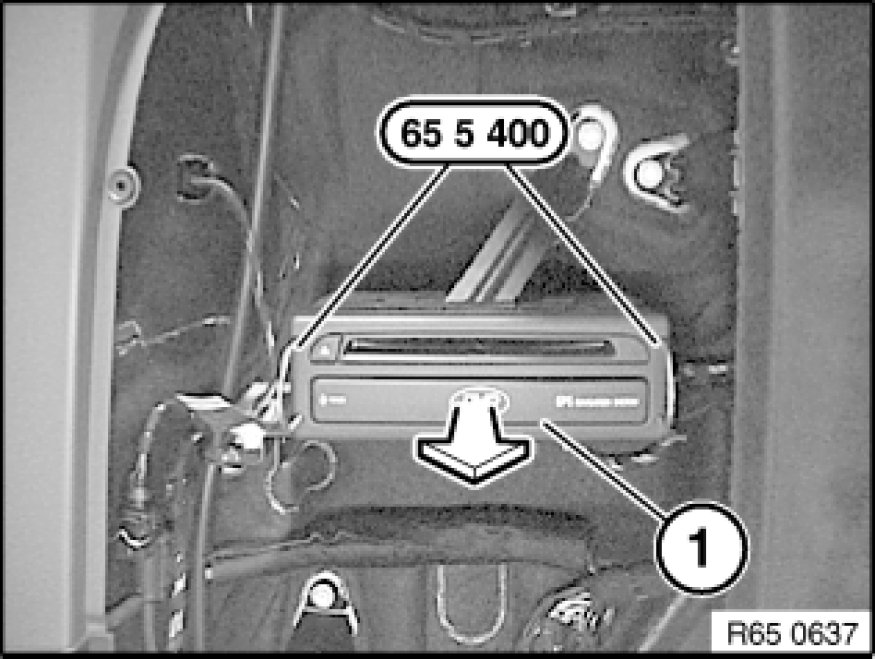
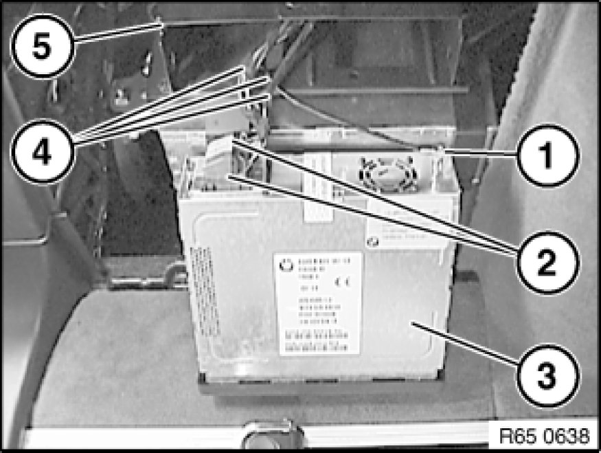

Removing and Installing/Replacing Navigation Computer with CD-Drive
65 90 511 - Removing and installing (replacing) navigation computer with CD drive

Special tools required:
- 65 5 400 65 5 400 Release Bracket

Important!
Read and comply with notes on protection against electrostatic damage (ESD protection) 61 35 ... Notes on ESD Protection (Electro Static Discharge).

Necessary preliminary tasks:
- Remove flap in luggage compartment panel on left Removing and Installing/Replacing Flap In Luggage Compartment Trim, Left or Right.

Unlock navigation computer (1) with special tool 65 5 400 65 5 400 Release Bracket and pull out in direction of arrow.

Disconnect antenna connector (1).
Unlock plug connections (2) and disconnect.
Remove navigation computer (3).
Installation Note:
Make sure navigation computer (3) is correctly seated.
Wires (4) must not be trapped between navigation computer (3) and insert frame (5).

Replacement:
Carry out programming/coding Programming and Relearning.